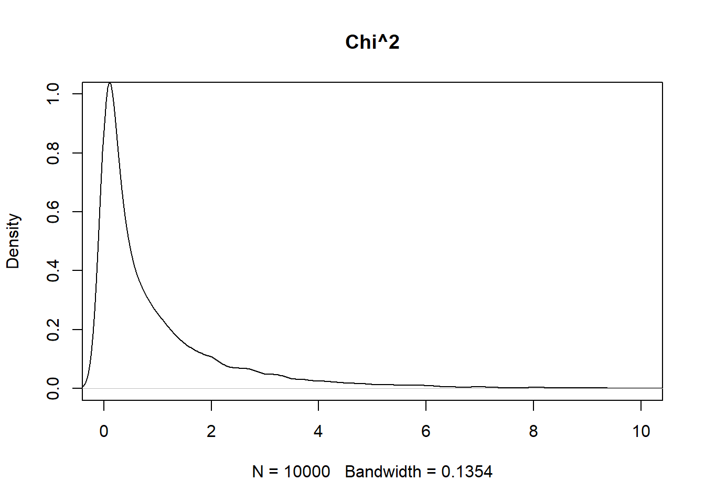
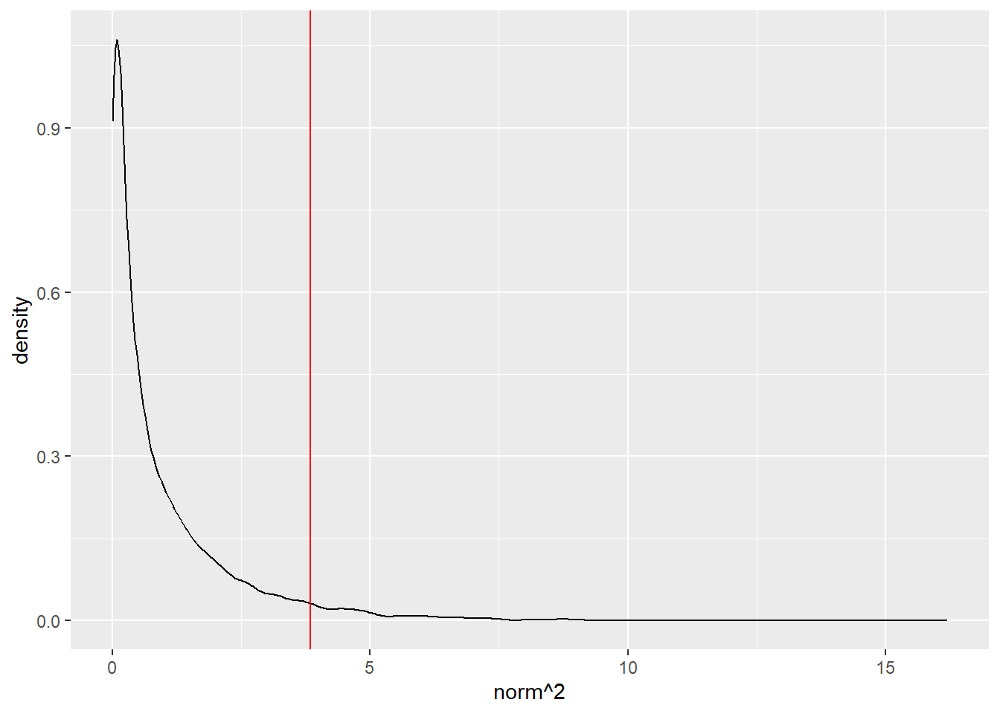
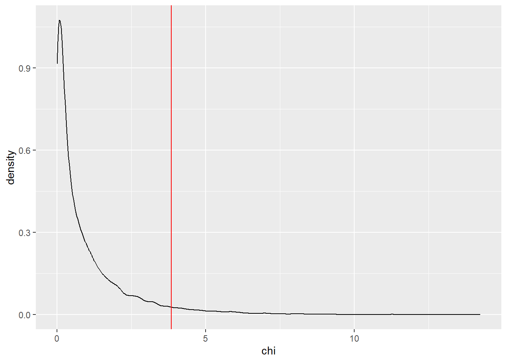

library(magrittr)
library(vcdExtra)
library(tidyverse)2 Odds and risks
Overview
In the previous lab, we showed how to produce descriptive statistics that quantify relationships between categorical variables observed on a given sample. No formal attempt was made to extend conclusions beyond the sample. In this lab, we will explore methods for making inference about the association between two categorical variables in a larger population of interest. The usual caveats apply, including but not limited to:
These methods cannot be interpreted in a straightforward way unless the data are an independent sample from a well-defined population of interest, obtained using a probability (random) mechanism.
These methods are not necessarily robust to extreme outliers or large quantities of missing data. Intending to do inference does not eliminate the need for exploratory checks on data quality.
The probabilistic “guarantees” attached to these inferential methods do not hold in the context of using the same data to generate hypotheses and test them. See R for Data Science, Chapter 22 for advice about using “holdout data” when you’re serious about formal inference.
Notation for I x J Tables
Here is a glossary of terms and notation that we’ll use throughout the lab (and the course).
Mathematical expressions are formatted with dollar signs for improved appearance in the HTML document. When reading the .Rmd script, in RStudio, moving your cursor over something between dollar signs “pops out” the formatted mathematical expression from that location on the screen.
- \(I\) denotes the number of rows in a 2-way table of counts, \(J\) denotes the number of columns
- \(X\) denotes the “row variable” – a categorical random variable (factor) taking on I possible values \(x_1, ..., x_I\)
- \(Y\) denotes the “column variable” – a categorical random variable taking on \(J\) possible values \(y_1,...,y_J\)
- The cells in a 2-way table are indexed by \(i\) and \(j\), where \(i\) in \(1:I\) is the row index and \(j\) in \(1:J\) is the column index
- \(N\) is the total count over the whole table, and \(n_{ij}\) is the count in the \(i,j\) cell. That is, the number of observation for which \(X = x_i\) and \(Y = y_j\)
- \(p_{ij}\) is the proportion, out of the N observations, which fall in the \(i,j\) cell (so \(p_{ij} = n_{ij}/N\))
- \(p_i.\) is the ith row proportion, and \(p._j\) the \(j\)th column proportion – the . notation suggests that we’ve summed over/collapsed the index it replaces
Load Packages for the Lab
We’ll use the following packages in this lab:
Statistical Independence
Recall that two random variables, X and Y, are independent if they are uninformative about one another in terms of the probability of occurrence of specific outcomes. For example, if we roll two fair dice, one after the other, the outcome on the first roll in no way changes any of the probabilities having to do with the outcome on the second roll. We say, therefore, that the two outcomes are statistically independent.
In terms of the mathematics of probabilities,
Random variables X and Y are independent <=> P(X,Y) = P(X)P(Y)
(The <=> signifies logical equivalence)
In words, this expression means that X and Y are independent if and only if the joint probability, \(P(X,Y)\) [i.e., \(P(X = x, Y = y)\)], is the product of the marginal probabilities, \(P(X = x)\) and \(P(Y = y)\).
Independence can also be characterized in terms of conditional probabilities: \(X\) and \(Y\) are independent if \(P(X|Y) = P(X)\). In words, \(X\) and \(Y\) are independent if the conditional probability of \(X\) given \(Y\) is the same as the marginal probability of \(X\) without knowing \(Y\).
It’s important to understand here that the independence relation that we’ve just described is a property of the underlying population distribution of the random variables \(X\) and \(Y\). When we’re given a sample from such a population, in the form of an \(I \times J\) contingency table, we have to think about the evidence that table contains for the independence relation in the population.
Statistical Independence for Contingency Tables
In terms of the sample proportions that we can estimate from an \(I \times J\) contingency table, the independence relation is (check the Notation Section above):
\[p_{ij} = p_i.p._j\]
In words: the cell probability for the \(i,j\) cell is equal to the marginal probability of the \(i^{th}\) row times the marginal probability of the \(j^{th}\) column.
Because we don’t know the underlying joint probability distribution that leads to a specific, observed contingency table, we can only evaluate the independence assumption on the basis of the sample independence relation, \(p_ij = p_i.p._j\). We say that a contingency table is the most consistent with statistical independence if \(p_{ij} = p_i.p._j\) for all \(i,j\). And, the extent to which the observed counts in a table deviate from \(p_{ij} = p_i.p._j\) for all \(i,j\) provides us with evidence against the statistical independence hypothesis.
Plots
You can use mosaic plots to get a sense for the independence or lack of independence in \(I \times J\) tables. In general, when the two variables of an \(I \times J\) table are independent, then the vertical splits in the mosaic plot of that table should (approximately) line up. Actually, depending on the complexity of the mosaic plot, it may be that you’re looking for the horizontal splits to line up, but in the examples here, it’s the vertical splits.
Run the following chunk of R code to see some examples.
# Approximately independent
tab1 <- matrix(c(45,10,50,14,35,12),3,2,byrow=TRUE)
mosaic(tab1)
# Probably not independent
tab2 <- matrix(c(45,10,14,50,35,12),3,2,byrow=TRUE)
mosaic(tab2)Intuitively, the closer the vertical splits are to being aligned, the closer the observed table of counts will be to the expected table of counts. You can play around with adjusting the cell counts in the code above give yourself a better understanding of the mosaic plot as a tool for evaluating statistical independence visually.
A closely-related visualization is the sieve plot, which first draws the outline of the mosaic plot that we would expect to see under the assumption of independence (i.e., with the splits lined up). It then fills in each cell of this outline with a grid of squares, scaled so that \(n_{ij}\) squares fit within the \(ij^{th}\) cell. Thus, cells with bigger-than-expected counts are filled with denser grids, and cells with smaller-than-expected counts are filled with sparser grids. For extra clarity, the “underfilled” cells are shaded red and the “overfilled” cells shaded blue.
# Approximately independent
sieve(tab1, shade = TRUE)# Probably not independent
sieve(tab2, shade = TRUE)The grid sizes on the first sieve plot are approximately the same, indicating independence; whereas the grid sizes on the second plot are different, indicating a departure from independence.
Chi-Squared Statistic
We hope that you remember from your introductory statistics course that the Chi-Squared test is one way to test the independence of two variables in an \(I \times J\) contingency table. The essential idea behind the test is this:
We create (well, the computer does it for us) a table of “expected counts,” or the counts that we would expect to see based on the margin and table totals, if the two variables were actually independent.
We compare this expected table to the observed table (using the \(\chi^2\) statistic).
If the observed and expected tables are far apart, we take this as evidence against the (null) hypothesis of independence.
The chi-squared statistic sums the quantity \((O_{ij} - E_{ij})^2 / E_{ij}\) over every cell of the table, where for the \(i,j\)th cell, \(O_{ij} = n_{ij}\) is the observed cell count, and \(E_{ij} = p_i.p._jN\) is the expected count from the expected table (again, to re-emphasize: it’s the expected table under the hypothesized assumption of independence between the two variables, \(X\) and \(Y\)).
The following chunk of R code builds a function, called chisq_stat0(), that calculates the chi-squared statistic. This function is almost superfluous, since the calculation of the chi-squared statistic is already built into a function in R that performs the chi-squared test. Nevertheless, we’re creating this function as illustrative of the relatively simple calculations, and because we’ll actually need this variation to perform a simulation later.
chisq_stat0 <-function(tbl, smooth = 10e-8){
O <- tbl + smooth
N <- sum(tbl)
E <- outer(rowSums(tbl), (colSums(tbl)))%>% divide_by(N) # this is equivalent to (p_i.)*(p._j)*N
X2 <- (O - E) %>% raise_to_power(2) %>% divide_by(E) %>% sum()
return(X2)
} Unlike the built-in R function, this function has a “smooth” argument, which adds a tiny positive value to every cell in the table. For tables with all non-zero counts, this changes the chi-squared statistic barely at all. The smoothing is included to ensure that the chi-squared statistic can always be defined, even if one the rows or one of the columns of a table contains all zeroes. This is a somewhat pathological situation in practice It can occur when we know that there was an additional possible level of a categorical variable, but we happened to not observe that level in the particular sample we have. But when we run a simulation that resamples thousands of times from a table of small counts, such a situation will not-infrequently arise.
Please note that you should NOT do this smoothing in practice. We are only doing it here so that our simulation will run without interruption. If you ever do encounter a table with one row or column that is all zeroes, you should think carefully about how to proceed.
Chi-squared Test (of association)
Now we move into a formal statistical test of independence. Depending on the context of the problem, the \(\chi^2\) test is also referred to as a test of association or a test of homogeneity. By calculating the \(\chi^2\) statistic, we have a number associated with the deviation from independence for an observed table.
But, how big does that statistic have to be for us to say that we have enough evidence against the independence hypothesis? Could we have obtained a number this large or larger if the row and column variables really were independent? If we’re going to interpret this value statistically, to test the hypothesis of independence, we need a reference distribution.
In what follows, we’ll go through several different cases that depend upon sample size. For large samples (one rule of thumb on samples size holds that “large” means that all cell counts are 5 or larger and the table total is at least 30), the reference distribution is a \(\chi^2\) distribution. When the sample size is not large, there is another option for evaluating statistical independence.
Standard Case (large sample size)
When the sample size is large, the reference distribution for the chi-squared statistic is a Chi-squared distribution with \((I-1) \times (J-1)\) degrees of freedom.
You saw the Berkeley Admissions data in the M1L4 narrated lecture. These data are available in R as the object UCBAdmissions. We’ll use the UCBAdmissions data collapsed over department to consider the independence of admission and gender (we know that department matters here, but using the aggregated table is useful as an illustration).
UCBAdmissions stores the data in a 2 x 2 x 6 array, so we’ll first collapse over the third dimension (department) using the margin.table() function, and then perform the \(\chi^2\) test. Please run this chunk of R code (if you haven’t already).
(UCBA_sum <- margin.table(UCBAdmissions,c(1,2))) Gender
Admit Male Female
Admitted 1198 557
Rejected 1493 1278chisq.test(UCBA_sum)
Pearson's Chi-squared test with Yates' continuity correction
data: UCBA_sum
X-squared = 91.61, df = 1, p-value < 2.2e-16There are several things to notice.
The R output for the test is titled
Pearson's Chi-squared test with Yates' continuity correction. We’ll have some comments about the continuity correction below.Notice that the value of
X-squared, which is the chi-squared statistic is 91.61,df = 1sinceUCBA_sumis a 2 x 2 table.The p-value associated with this test statistic is very small. We can report it as p < 0.0001. This provides convincing evidence that admission and gender are not independent. Let’s also take a quick look at the mosaic plot:
mosaic(UCBA_sum)The vertical split between Male and Female in the Admitted group is substantially farther to the right than the vertical split between Male and Female in the Rejected group. Evidence that the two variables, Admit and Gender, are not independent.
What about the continuity correction? There’s actually quite a bit of data in the UCBAdmissions dataset, with N = 4526. In this case, the continuity correction doesn’t make that much difference. In fact, run the following code and compare the X-squared values and the p-values when correct = TRUE (the default) and when correct = FALSE.
chisq.test(UCBA_sum)
Pearson's Chi-squared test with Yates' continuity correction
data: UCBA_sum
X-squared = 91.61, df = 1, p-value < 2.2e-16chisq.test(UCBA_sum,correct = FALSE)
Pearson's Chi-squared test
data: UCBA_sum
X-squared = 92.205, df = 1, p-value < 2.2e-16You should notice that the X-squared value changed a little bit without the continuity correction, but the p-value didn’t change at all. This is fairly typical with really large sample sizes like we have here. The continuity correction doesn’t really make any difference for our inference we still have really strong evidence that admission and gender are not independent.
The continuity correction was introduced to accommodate the use of a continuous probability distribution (the \(\chi^2\) distribution) as the reference distribution for a statistic calculated from non-continuous (i.e., categorical) data. Simply put, it makes the performance of the \(\chi^2\) statistic better (in terms of type II error) when the sample size is of moderate size. We recommend that you simply use the default, correct = TRUE.
The \(\chi^2\) test is also called a test for homogeneity in some situations, and the UCBAdmissions dataset provides a good example. Another way that we could consider the independence (or lack of association) between admission and gender is to ask whether the proportion of males admitted is the same as the proportion of females admitted. Put another way, we ask whether the proportions of admits are the same (homogeneous) between the two groups, males and females:
# transpose the UCBA_sum matrix, so Gender is row the variable:
(UCBA_sum2 <- t(UCBA_sum)) Admit
Gender Admitted Rejected
Male 1198 1493
Female 557 1278# perform the test for a difference in two proportions:
prop.test(UCBA_sum2)
2-sample test for equality of proportions with continuity correction
data: UCBA_sum2
X-squared = 91.61, df = 1, p-value < 2.2e-16
alternative hypothesis: two.sided
95 percent confidence interval:
0.1129887 0.1703022
sample estimates:
prop 1 prop 2
0.4451877 0.3035422 When you run this R chunk, you see the identical X-squared statistic to what we got from running chisq.test(UCBA_sum).
You’ll also get some output that tells you about the difference between the two admit proportions. That the 95% confidence interval for the difference in the two proportions, 0.113 to 0.170, does not contain zero is another way for us to communicate that we have strong evidence that the two admit proportions are not the same, i.e. that the two genders are not homogeneous in terms of admissions.
Recall again: simply summarizing this particular dataset using this 2 x 2 table is perilous we know there’s more to the story here. Indeed, if we collapsed over the admission decision to see the total numbers of applicants within each department, we could use the chi-squared test on this table to see that gender-specific application rates are not homogeneous, which suggests that collapsing over the departments could be a problem.
(UCBApplicants <- margin.table(UCBAdmissions, c(2,3))) Dept
Gender A B C D E F
Male 825 560 325 417 191 373
Female 108 25 593 375 393 341chisq.test(UCBApplicants)
Pearson's Chi-squared test
data: UCBApplicants
X-squared = 1068.4, df = 5, p-value < 2.2e-16Nevertheless, it’s been useful to use the summary data for illustrating equivalence between the chi-squared test and the difference in proportions test.
Sampling, Randomization, and Small-Sample Inference
When some (or all) of the cell counts are sufficiently small, the distribution of the chi-squared statistic does not follow a Chi-squared distribution very closely at all. We’ll explore this phenomenon in a fairly extreme case, where the cell counts are extremely small.
Data: Lady Tasting Tea
The Lady Tasting Tea is a classic (and classically British) example given by Sir Ronald Fisher to motivate the “exact test” which now bears his name. Briefly, in the tea-tasting experiment, a woman was presented with eight cups of tea four of which she knew to have had the tea poured first, and four of which she knew to have had the milk poured first, and she was asked to distinguish which cups had tea first and which had milk first.
The data from this experiment naturally fall into a 2x2 table where one dimension represents the lady’s guesses and the other dimension represents the truth. See the Examples in the help file for fisher.test() for a full description of these data.
There’s also a good book called, not surprisingly, “The Lady Tasting Tea,” by David Salsburg that gives an entertaining early history of Statistics.
The following R chunk recreates the Lady Tasting Tea data.
TeaTasting <-
matrix(c(3, 1, 1, 3),
nrow = 2,
dimnames = list(Guess = c("Milk", "Tea"),
Truth = c("Milk", "Tea")))
TeaTasting Truth
Guess Milk Tea
Milk 3 1
Tea 1 3There’s nothing to prevent us from applying the chisq.test() function to the TeaTasting data:
chisq.test(TeaTasting, correct = FALSE)Warning in chisq.test(TeaTasting, correct = FALSE): Chi-squared approximation
may be incorrect
Pearson's Chi-squared test
data: TeaTasting
X-squared = 2, df = 1, p-value = 0.1573We do get an answer, but also the helpful warning that “Chi-squared approximation may be incorrect.” Why so? (It’s not because we said correct = FALSE the same warning will appear either way).
We now present a simulation that should give you some insight into the problem here.
Parametric bootstrapping
The hypothesis of row-column independence can be expressed mathematically in terms of a probability distribution over the cell counts in a table. With R, if you can “draw” a new table from that distribution, you can draw a thousand. Then, you can compute a \(\chi^2\) statistic for each new table, and it turns out that you can use all of those recomputed statistics to approximate the sampling (reference) distribution of that statistic.
This idea (sample from a known distribution, calculate a test statistic, repeat) is closely related to the (perhaps familiar) idea of bootstrapping, in which a test statistic is calculated on re-samples (with replacement) from the original sample of data. There are entire books written about bootstrapping, and it’s well beyond the scope of this course to go into details here. We use this technique here to help illustrate the limitations of the Chi-squared distribution as the reference distribution for the \(\chi^2\) statistic in the case of small counts.
The essential result is that the reference distribution we get using our re-sampling technique is closer to the true reference distribution of the \(\chi^2\) statistic than is the \(\chi^2\) distribution when the sample size is small (simulation works just fine when the sample size is large as well, it’s just a waste of computation when the known large-sample distribution applies).
There are some other tricky details here, because there are multiple probability distributions over cell counts that are consistent with the verbal statement “rows and columns are independent.” For now we’ll just take the simulation script below as given. If you’re interested in some of these details, please see the optional “Sampling Models” section below.
Once the re-sampling script computes a lot of chi-squared statistics (stored in resamp$stats) for tables drawn under the hypothesis of independence, we see where we stand by plotting the distribution of those re-sampled chi-squared statistics, and comparing it to the theoretical Chi-squared distribution on a plot.
Running this R chunk just creates the function we need for re-sampling.
two_way_resample <- function(tab, nsim = 2000, fixed_margins = "none") {
stopifnot(fixed_margins %in% c("none", "columns", "rows", "both"))
new_two_way <- function(tab, fixed_margins = "none"){
I <- nrow(tab)
J <- ncol(tab)
n_i. <- rowSums(tab)
n._j <- colSums(tab)
N <- sum(tab)
null_probs <- (n_i. %*% t(n._j))/(N^2)
new_table <- matrix(0, I, J)
# Generate random table as SINGLE multinomial sample of size N, preserving neither row nor column margins.
if(fixed_margins == "none"){
new_table <- rmultinom(n = 1, size = N, as.vector(null_probs)) %>% matrix(nrow = I, ncol = J)
}
# Generate random table as independent multinomial samples in each ROW, preserving original row margins.
else if(fixed_margins == "rows"){
for(i in 1:I){
new_table[i, ] <- rmultinom(n = 1, size = n_i.[i], prob = null_probs[i ,]) # rmultinom automatically renormalizes the row i probs.
}
new_table %<>% matrix(nrow = I, ncol = J)
}
# Generate random table as independent multinomial samples in each COLUMN, preserving original column margins.
else if(fixed_margins == "columns"){
for(j in 1:J){
new_table[, j] <- rmultinom(n = 1, size = n._j[j], prob = null_probs[, j]) # rmultinom automatically renormalizing the column j probs.
}
new_table %<>% matrix(nrow = I, ncol = J)
}
# Generate random table by sampling from among all possible I x J tables with the given row and column margins.
else if(fixed_margins == "both"){
new_table <- r2dtable(n = 1, r = n_i., c = n._j)[[1]]
}
return(new_table)
}
chisqs <- rep(NA, nsim)
for(j in 1:nsim){
chisqs[j] <- new_two_way(tab, fixed_margins) %>% chisq_stat0
}
obs_chisq <- chisq_stat0(tab)
pval <- sum(chisqs >= obs_chisq)/nsim # One-sided
return(list(stats = chisqs, obs_chisq = obs_chisq, pval = pval))
}Sampling Models (Optional)
In this section, we describe some of the details of the code for re-sampling, in particular the different types of probability distributions from which we can draw the re-samples. In the example of running the code below for the Lady Tasting Tea data, we perform the re-sampling only based on the method imposed by the experimental design in the actual Lady Tasting Tea experiment.
As mentioned above, to use the re-sampling function, we need to make the verbal statement “sample a new 2-way table under the hypothesis of independence” precise enough to do some computing. There are several different ways that the Lady Tasting Tea experiment could have been carried out. Each possible sampling model below corresponds to a different way the tea-tasting experiment could have been designed and performed statistical analysis depends on the experiment design (as it should!). We’ll also point out which way the experiment was actually performed.
Unrestricted Sampling
Consider this scenario: we give the lady however many cups of tea she feels like tasting, and we don’t tell her anything about how many of each type (milk-first or tea-first) there are. This “unrestricted” sampling can be modeled using a Poisson distribution.
[This case is included for sake of completeness, in the context of inference, this and the next situation, where the total sample size is fixed can be treated the same.]
Total Sample Size Fixed
Now consider this scenario: The lady is to be presented with eight cups of tea, but the number that are milk-first is not predetermined. In the actual Lady Tasting Tea data, there were four milk-first cups, but in this scenario, there could have been two, five, eight, any number between zero and eight. In this scenario, the lady is not told how many cups of each type (milk-first or tea-first) there were. To perform this sampling, we use a multinomial distribution for the entire table (i.e., with N = 8 and four categories).
One Margin Fixed
In another scenario that could have produced the Lady Tasting Tea data, suppose there are four cups of each type of tea, but the lady doesn’t know there are four of each. In this case “The Truth” margins are fixed (at four), but the “Guess” margins are not. For this type of sampling, we use independent multinomials within rows or within columns (i.e., with N = 4 and two categories).
Both Margins Fixed
This is the actual situation of Fisher’s original Lady Tasting Tea experiment. Four cups of each type were presented, and the lady knew that she would taste four of each. Because of this, the row margins are fixed at four and the column margins also fixed at four. In this case, we base the sampling on (generalized) hypergeometric distribution.
Examples of Re-sampling: Lady Tasting Tea
In the following R chunk, we re-sample the Lady Tasting Tea data, based on the sampling design imposed by the original experimental setup (both margins fixed). Go ahead and run the R chunk and take a look at the resulting plot.
resamp_tea <- two_way_resample(TeaTasting, nsim = 2000, fixed_margins = "both")
chisq_val <- seq(0,8,length=2000)
chisq_theory <- dchisq(chisq_val,1)
# fix both row and column margins
ggplot() +
ggtitle("Re-sampling distribution of chi-squared stat vs
theoretical chi-squared distribution") +
xlab(expression(X^2)) +
ylab("") +
geom_line(mapping = aes(x = chisq_val, y = chisq_theory), color = "blue") +
geom_density(mapping = aes(x = resamp_tea$stats), bw = 0.05) +
geom_vline(aes(xintercept = chisq_stat0(TeaTasting)), color = "red")
In this plot, the smooth blue line is the theoretical Chi-squared (df = 1) reference distribution. The black line with a few spikes is the reference distribution we get by running the re-sampling code. There are actually only a few values of the chi-squared statistic that are possible with such a sparse table. Finally, the vertical red line is the value of the chi-squared statistic calculated from the observed table.
The problem here is that with such small counts in the table, there are only a small number of rearranged (re-sampled) tables possible. There just aren’t that many ways to rearrange eight cups of tea into a 2x2 table of counts, especially if we also fix both column and row totals! Therefore, only a limited number of tables, and an even more limited number of chi-squared statistics, can possibly be obtained.
This is precisely why using the large sample reference distribution (blue line) isn’t such a good idea here, because is does a really poor job of approximating the resampled reference distribution (black line).
It might seem like it was overkill to simulate 2000 samples and calculate the chi-squared statistic for each one, when there were actually only three possible chi-squared statistics for this situation! That is, maybe there is some way we could have have worked this out by hand. Indeed, working it out “exactly” by hand is what Fisher did. His test involves (essentially) listing every way that the chi-squared statistic could have been bigger than it was, and calculating the probability of each of those ways.
Execute the following R chunk, which applies Fisher’s Exact Test to the Lady Tasting Tea data.
fisher.test(TeaTasting)
Fisher's Exact Test for Count Data
data: TeaTasting
p-value = 0.4857
alternative hypothesis: true odds ratio is not equal to 1
95 percent confidence interval:
0.2117329 621.9337505
sample estimates:
odds ratio
6.408309 Fisher’s Exact Test agrees pretty closely with the final simulation above because Fisher’s exact test supposes that both rows and columns of the tables are fixed by design. Restricting it in this way, as we see above, reduces the number of possible tables to deal with, which makes it easier to calculate the p-value “by hand.” And in the tea-tasting example, these restrictions actually do make sense. There are 4 cups of each kind of tea, the lady knows there are 4 of each, there are only a few ways this thing can go.
We’d also like to call your attention to the odds ratio and 95% confidence interval estimates that appear in the fisher.test() output. Rather than using a chi-squared statistic for making inference, the fisher.test() function uses an odds ratio test.
Important note: tests for equal odds ratios, equal proportions and homogeneity will yield similar inferences in the case of 2x2 tables. You just have to sort out which procedure makes the most sense for the data you are dealing with.
Beyond Fixed Margins
In many (most) cases, the assumption that all the row and column totals are fixed doesn’t make sense and isn’t needed. For example, in a medical study, we might recruit 30 people with a disease; give treatment A to half of them and treatment B to the other half; and record whether or not they were cured after some period of time. In this case, we’ve fixed the row totals by design, because we put 15 patients in each group, but we haven’t fixed the column totals, we can’t say in advance know how many patients will be cured under either treatment. And, in this case, we still have the potential problem of small cell counts.
Fisher’s exact test was designed for precisely the situation of the Lady Tasting Tea (statistically, both margins are fixed). Nevertheless, it is used in many cases to test independence when the cell counts are small, as in the hypothetical medical study just described.
You are welcome to replicate the call to the two_way_resample() function, changing the fixed_margins = "both" argument to any of "none", "rows" or "columns". Using the Lady Tasting Tea data, you’ll see that the Chi-squared (df = 1) distribution gives a poor approximation to the re-sampled distribution, because the cell counts are so small!
Beyond 2 x 2 Tables
You can apply chisq.test() and fisher.test() to general \(I \times J\) tables, but you will only learn about the independence hypothesis. That is, you will not get any estimates. For estimates proportions and odds ratios from \(I \times J\) tables, we have to turn to more sophisticated statistical models such as generalized linear models.
Lab 2
Module 2 Lab Assignment Instructions
Repeat instructions
Like for Lab 1, you are asked to create a self-contained R Markdown script that can generate a document which answers the questions below. You will submit the .Rmd script, and you will be graded (complete/incomplete) based on whether or not the script generates a reasonable HTML document.
R Markdown for submission
Last week’s instructions are repeated here for your convenience.
NOTE: If you are reading these instructions from the HTML preview in the Viewer pane, they will be overwritten in the following steps. You can avoid this by “popping out” the current HTML preview into an external browser window, by clicking the the “Show in new window” icon (to the right of the broom icon in the Viewer pane).
Alternatively, you can read the instructions right from the .Rmd script, keeping in mind that you will need to switch back to the lab script tab to view the rest of the instructions once you create a new script. You could also copy and paste the whole Lab 2 Assignment Instructions section into your new document while you’re working on it, and then delete the instructions before you submit it.
Click “File” -> “New File” -> “R Markdown”, and dialog box will pop up. Change the title to “Lab Assignment 1” and name yourself as author. Select PDF as the Default Output Format, then click OK. The header of your new file should look something like this:
---
title: "Lab Assignment 2"
author: "Ronald Fisher"
date: "2024-04-08"
output: pdf_document
---
The file will initially contain some examples to get you started with RMarkdown, which you should replace with your lab content. Save the notebook as something like “Lab_Assignment_1” using “File” –> “Save As…”
In your new .Rmd script, answer the questions in the “Questions” section below. Include all the code you need to produce the requested outputs. Your script should include a top-level section heading for each question, for example:
# Question 1
stuff here
# Question 2
other stuffWhether or not you include the text of the questions in your script is up to you.
Do be sure to include, near the top of your script, a code chunk that loads any non-default packages you use (such as vcdExtra or Sleuth3).
Within the question sections, you can chunk your code in whatever way seems reasonable. Incorporate any written answers outside the code chunks using Markdown formatting as needed (see “Help” -> “RMarkdown Quick Reference” for text formatting help).
To ensure that your .Rmd script will be fully self-contained (i.e. it will not depend on objects that were defined during the lab, and could be run as-is if you sent it to someone else), you should clear the workspace before you begin.
To clear the workspace, click the broom icon in the Environment pane.
Once you’ve answered the questions in your new .Rmd script and you have verified your code is self contained, you should Run -> Run All Chunks and generate a .pdf file of your document, to check that everything looks like you want it to. Having concluded that your .Rmd script produces a pdf document that includes all the output you want, submit both the Lab_Assignment_2.Rmd file and the pdf document on Canvas as your Lab Assignment 2.
Feel free to post on the discussion board if you have any questions or encounter any difficulties with this process.
Questions:
NOTE: The first two questions are for credit. The next two are optional/for fun.
Q1.
The following data come from one of Gregor Mendel’s famous experiments with pea plants. In this particular experiment, Mendel examined two categorical traits in pea seeds, each with two possible values: seed color, yellow or green, and seed shape, round or angular.
According to Mendel’s hypothesis, the inheritance pattern of these traits was characterized by “independent assortment”, that is, there was no “genetic linkage” between these traits.
mendel <- as.table(
matrix(c(315, 108, 101, 32),
nrow = 2,
dimnames =
list(Color= c("Yellow", "Green"),
Shape = c("Round", "Angular"))))
mendel Shape
Color Round Angular
Yellow 315 101
Green 108 32How consistent are these data with Mendel’s hypothesis of independence?
Is a Chi-squared test appropriate here? Why or why not?
Notice that in this particular case, we’re not interested in a departure from independence, but rather a confirmation of independence.
Cells are at least 5, the chi-squared test should be adequate, but I’ll confirm with Fisher.
The null is that the proportions at each shape are the same for both colors, The proportion of round and yellow is the same as round and green.
mosaic(mendel)They look independent based on the alignment.
chisq.test(mendel)
Pearson's Chi-squared test with Yates' continuity correction
data: mendel
X-squared = 0.051332, df = 1, p-value = 0.8208p-value = 0.8208 indicates that there’s evidence of independence of color and shape.
chisq.test() and fisher.test()
prop.test(t(mendel))
2-sample test for equality of proportions with continuity correction
data: t(mendel)
X-squared = 0.051332, df = 1, p-value = 0.8208
alternative hypothesis: two.sided
95 percent confidence interval:
-0.10334886 0.07391357
sample estimates:
prop 1 prop 2
0.7446809 0.7593985 prop test confidence interval contains zero, that is further evidence these groups are the same. Shape is homogeneous in terms of color.
For Fisher, the null is the proportions at one variable are the same for different values of the second variable.
fisher.test(mendel)
Fisher's Exact Test for Count Data
data: mendel
p-value = 0.819
alternative hypothesis: true odds ratio is not equal to 1
95 percent confidence interval:
0.5667874 1.4806148
sample estimates:
odds ratio
0.9242126 Fisher agrees that the proportions are the same.
Q2.
We mentioned previously, and it’s mentioned in the narrated lecture materials that there’s an equivalence between the Chi-squared test and the difference in proportions test in the case of 2x2 tables. Take a look for the Mendel data:
chisq.test(mendel, correct = FALSE)
Pearson's Chi-squared test
data: mendel
X-squared = 0.11634, df = 1, p-value = 0.733prop.test(mendel, correct = FALSE)
2-sample test for equality of proportions without continuity correction
data: mendel
X-squared = 0.11634, df = 1, p-value = 0.733
alternative hypothesis: two.sided
95 percent confidence interval:
-0.09506177 0.06662771
sample estimates:
prop 1 prop 2
0.7572115 0.7714286 The output from the prop.test chunk refers to a two.sided test, with an interpretation in terms of a signed difference between two proportions, whereas the chisq.test() is a one-sided test, with an interpretation involving deviation from the hypothesis of independent rows and columns.
It’s not entirely obvious why these results should be the same. The following exercise can help you see what’s going on.
Use rnorm() and rchisq() to produce and store the following vectors:
1000 draws from the standard normal distribution, 1000 draws from the Chi-squared distribution with 1 degree of freedom.
norm <- rnorm(10000, mean = 0, sd = 1)
chi <- rchisq(10000, df = 1)- Construct separate histograms/density plots of the raw chi-squared values and the squares of the standard normal values.
What do you observe?
squared <- norm^2
# plot(density(norm),
# xlim = c(-10,10),
# ylim = c(0,1),
# main = "Normal")
plot(density(chi, bw = 0.1354),
xlim = c(0,10),
ylim = c(0,1),
main = "Chi^2")
plot(density(squared, bw = 0.1354),
xlim = c(0,10),
ylim = c(0,1),
main = "Norm^2")
They are very similar. The chi squared graph is a little more left and taller.
- Recall (or obtain from
qnorm(0.975)that the 2-sided 95% critical values for the standard normal distribution are ± 1.96.
Use qchisq() to compare the square of these 2-sided 95% critical values from the standard normal to the one-sided 95% critical value for the Chi-squared(1).
What does this suggest about tests based on these two reference distributions?
crit_z <- qnorm(0.975)
crit_chi <- qchisq(0.95, df = 1)
crit_z^2[1] 3.841459crit_chi[1] 3.841459At least at where chi-squared has one degree of freedom, these two tests are equivilent.
ggplot() +
aes(norm^2) +
geom_density() +
geom_vline(xintercept = qnorm(0.975)^2, color = "red")
ggplot() +
aes(chi) +
geom_density() +
geom_vline(xintercept = qchisq(0.95, df = 1), color = "red")
END REQUIRED QUESTIONS
The next two questions are optional, you do not need to submit anything about them for your assignment.
Q3.
This isn’t actually a question, just some reading and code to work through. It’s an interesting continuation of Mendel’s independence hypothesis, and a slightly different application of chisq.test() in R.
Mendel actually had a more sophisticated hypothesis than “seed color and seed shape are independent”, he knew how they should be independent based on his mechanistic understanding of the process of inheritance of dominant and recessive traits. On these grounds, Mendel hypothesized specific proportions for each cell in this particular table. He knew that if his ideas were correct, the cell proportions for his experiment should have been, specifically:
(mendel_expect <- cbind(c(9, 3), c(3,1)))/16 [,1] [,2]
[1,] 0.5625 0.1875
[2,] 0.1875 0.0625This is a more stringent requirement than row/column independence, since there would be many possible tables consistent with some kind of independence relationship, but radically inconsistent with Mendel’s scientific understanding. For instance, if the upper right and lower left cell counts had been reversed, we would get the same chi-squared statistic for the table (check!) but seeing this would have suggested that Mendel was somehow seriously mistaken.
Here, we need a different approach than the chi-squared test of independence. We want to test an entire proposed distribution over the 4 cells. The tool for this job is the chi-squared test of goodness of fit, which in R is also performed by chisq.test().
The goodness of fit test is supposed to test the distribution of a single variable, so chisq.test() will perform the goodness of fit test if the data are provided as a single vector, rather than as a 2 x 2 table. Since we have particular distribution in mind, we’ll need to provide those hypothesized probabilities as well:
(mendel_vec <- as.vector(mendel)) # stretch out the table and make sure we know HOW it was stretched out, in order to get the hypothesized probabilities associated with the correct table cells.[1] 315 108 101 32And now preform the Chi-squared test passing in the vector of observed counts and the vector of specific proportions:
chisq.test(mendel_vec, p = c(9/16, 3/16, 3/16, 1/16))
Chi-squared test for given probabilities
data: mendel_vec
X-squared = 0.47002, df = 3, p-value = 0.9254Note that the degrees of freedom are different – 4-1 = 3 instead of (2-1)(2-1) = 1. A very rough idea of why this should be is that with a more specific hypothesis (“each cell probability should be exactly so”) there are more ways the data could deviate from it.
An interesting historical note: R.A. Fisher, when reviewing Mendel’s original data, applied the chi-squared test to some data like these, and reached the conclusion that deviations were too small to have arisen by chance. He thought that the independence model fit so closely that Mendel’s data must have been deliberately doctored though in his great respect for Mendel, Fisher laid the blame on “some gardening assistant” who must have known too well what his supervisor hoped to see.
Q4.
Suppose we performed the tea-tasting experiment, and produced a table with 4’s in the diagonal and 0’s in the off-diagonal cells – that is, suppose the lady performed as well as the experiment allowed. If we had observed this (best possible) performance under the fixed-columns design (where the lady didn’t know the number of cups of each type), what p-value would she score? (use resampling script). What if we observed this same performance under the fixed-rows and fixed-columns design (where she knew there were 4 cups of each)?
Does it make sense that the best-possible performance earns a smaller p-value under the more “challenging” experimental setup than under the “easier” one? What does this say about which design we might prefer to use?